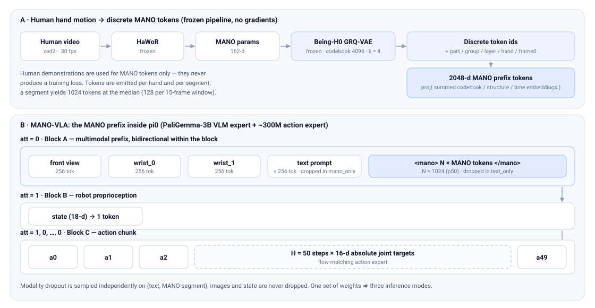

Research project · in progress
One π0 backbone, three inference modes — text-only, MANO-only and text + MANO — switched by modality dropout. Hand-motion sequences are tokenized into discrete MANO tokens and appended to the multimodal prefix, so the action expert attends to them without any new fusion module.
Why hand motion, and what we do with it.
Vision-Language-Action models condition on pixels and language. Human manipulation, however, is described most precisely by the motion of the hands. MANO-VLA asks a simple question: can a sequence of MANO hand poses act as a task-level prompt for a robot policy?
We build on π0 — a PaliGemma-3B vision-language expert plus a ~300M-parameter action expert — and append discrete hand-motion tokens to the multimodal prefix. Hand motion is tokenized by a frozen Being-H0 GRQ-VAE (4,096-entry codebook, k = 4 residual layers) and mapped to 2,048-d prefix tokens through codebook, part, group, layer, hand and time embeddings. Because the MANO tokens live in the same prefix block as the images and the text, the action expert attends to them automatically: no extra fusion module is needed and no vocabulary is extended.
A single set of weights supports three inference modes, selected at training time by modality dropout over {text, MANO}: text-only, MANO-only, and text + MANO. Supervision comes only from simulation (absolute joint targets); human recordings supply MANO tokens but never a loss. Training follows staged unfreezing: a kinematics self-supervised Stage A, then the action expert plus the MANO side, then PaliGemma LoRA.
Images and proprioceptive state are never dropped. Modality dropout is sampled independently on the text prompt and on the whole MANO segment, which yields exactly three combinations.
A conventional VLA: images, robot state and a language instruction. The MANO segment is deleted entirely, tag included.
image + state + text → actionNo language at all. The hand-motion tokens alone specify the task, which is what makes “what does MANO carry that text cannot?” testable.
image + state + MANO → actionBoth modalities are present; the model decides how to weigh them. This is the default mode at training time (probability 0.4).
image + state + text + MANO → action| Mode | Images (3) | State | Text | MANO segment | p (init) |
|---|---|---|---|---|---|
text_only | yes | yes | yes | deleted, tag included | 0.3 |
mano_only | yes | yes | deleted | yes | 0.3 |
text+mano | yes | yes | yes | yes | 0.4 |
Whole segments are kept or deleted, never individual tokens: once <mano> appears, all N
positions are filled, and a missing hand becomes an absent placeholder rather than a shorter sequence.
Losses are reported per mode, otherwise “works on its own” cannot be verified.
A frozen tokenizer on the data side; four lines of wiring on the model side.

π0 marks block boundaries with a per-token flag att; visibility is computed as a
cumulative sum, so a token never sees a later block. MANO-VLA only adds tokens inside block A and extends the
flag vector, which gives the intended visibility for free:
att = 0, bidirectional inside the block.att = 1: it sees the whole prefix but not the actions.att = 1, 0, …, 0: the action expert sees everything.
A 23-case self-check on CPU (project/scripts/smoke_pi0_mano_prefix.py) verifies shape,
parameter count, the absent-hand path, gradient flow, mask semantics and the three modes bit-for-bit against
the π0 formula.
Every token carries codebook id, part (wrist / finger), group, residual layer, hand and the first frame it covers. Its embedding is summed and projected once:
# per token, one projection layer; the vocabulary is not extended e = proj( motion_emb[id + 4096*part] + group_emb[group] + layer_emb[layer] + hand_emb[hand] + time_proj( time_pe(frame0 / fps) ) ) # a missing hand swaps the content for absent_emb[hand] and keeps the time PE # <mano> and </mano> are two learned 2048-d vectors
Time is encoded in seconds, not token index, so a token is anchored to a real frame number and the 4-frame stride of the tokenizer is decoupled from the position encoding. Positions follow the same rule as the text: a 1-token position is interleaved with 16-d observations, so the state block is projected from 18 to the model width and the action dimension is 16.
One token covers 4 frames per (part, group, layer) chain, and there are 2 × 2 × k such chains. At k = 4 a single hand emits 64 tokens per 15-frame window, measured median 1,024 tokens per sample (both hands). The MANO prefix therefore costs roughly 4× the text-only forward pass (109 s vs 466 s on the same 600 samples), and compressing it is an open decision.
The Imitator Game only: 53 bimanual manipulation tasks, four skill levels, each level with a human half and a simulation half. Re-collected simulation data supersedes the shipped episodes wherever it exists.
| Quantity | Value | Source |
|---|---|---|
| Tasks / levels | 53 / 8 | L0–L3 plus one L*-extend per level |
| Human segments with extracted MANO | 10,760 | data/imitator_game/mano/<task>/<level>/human/ |
| Being-H0 162-d conversions | 10,760 | plus 278 _absent variants for missing-hand frames |
| MANO payload on disk | 2.54 GB | npz only, 30 fps, wrist-local frames |
| Re-collected simulation episodes | 16,240 | 212 variants under _recollect/segments/ |
| Episodes with three-view video | 1,200 | H1/H2/H3 × 8 levels × 50 episodes |
| Units supporting all three modes | 201 / 223 | 11 (task, level) units are text-only by construction |
state = qpos[t] (18-d) and actions = action[t : t+50] (50 × 16 absolute joint targets).L*-extend episode falls back to its base level and is tagged mano_borrowed.AGENTS.md and are not re-litigated per session.
Staged unfreezing, and an evaluation protocol that can actually reject an idea.
| Stage | Trainable | Objective |
|---|---|---|
| A | MANO side | Kinematic self-supervision (reconstruction + temporal contrast), with a small language cross-entropy as an auxiliary term. Plain text CE alone was rejected: text tops out at a few bits per task-and-level unit, while hand motion is far denser. |
| B1 | Action expert + MANO side (583.5M) | Flow-matching action loss; the VLM stays frozen. |
| B2 | + PaliGemma LoRA (r = 16) | Low-rank adaptation of the vision and language paths. |
| B3 | Full fine-tune (optional) | Mixed with Stage-A batches so the MANO path is not overwritten by the action loss. |
Splits are taken at the episode level, not the frame level: inside every (task, level) group,
one episode in stride goes to validation with a fixed stride, so two runs that use the same
val_frac necessarily land on the same episodes. On H1/H2/H3 × 8 levels this gives
1,080 training episodes / 412,374 samples and 120 validation episodes / 45,611 samples.
Evaluation is deterministic — the flow-matching noise is seeded — so checkpoints are directly
comparable. Results are reported per mode, per (mode, task, level) and per action dimension, always
next to a “predict zero” baseline so that a model which has learned nothing is obvious.
Three levels of evidence are used: offline codebook reconstruction curves, held-out action-chunk MAE, and
only finally closed-loop success rate in the simulator.
Stage B1, from released π0 weights on H1/H2/H3: 600 steps, batch 8, 3.4 s per step, peak 21.3 GB of 24 GB. The table is an excerpt of the logged points (every 200th step, plus the first).
| Step | Total loss | text_only | mano_only | text+mano |
|---|---|---|---|---|
| 20 | 1.5596 | 1.5851 | 1.5557 | 1.5463 |
| 100 | 1.2549 | 1.2332 | 1.0805 | 1.0728 |
| 300 | 0.7496 | 0.2441 | 0.1782 | 0.1802 |
| 600 | 0.4302 | 0.1684 | 0.1920 | 0.2175 |
All three modes decrease; none is sacrificed for another. Individual log points are noisy because each aggregates only 160 samples with freshly drawn flow-matching noise, so the trend matters, not the point.
Mean absolute error of generated action chunks on the held-out episodes, in the normalised [−1, 1] space, 600 samples per mode.
| Checkpoint | text_only | mano_only | text+mano | predict-zero baseline |
|---|---|---|---|---|
| Stage B1, step 200 | 0.7652 | 0.5046 | 0.5062 | 0.5349 |
| Stage B1, step 600 | 0.3495 | 0.3736 | 0.3734 | 0.5349 |
What is done, what is running, and what is deliberately unresolved.
| Item | State | Note |
|---|---|---|
| Human MANO extraction, whole database | done | 10,760 segments, side-prior handedness, plus interpolation-filled variants |
| Simulation re-collection | ongoing | H1/H2/H3 complete with video; the remaining tasks hold trajectories only |
| Architecture v3 (π0 wiring, token contract, loaders) | done | self-checks pass on CPU and on the real model, locally and on the server |
| End-to-end training and evaluation chain | done | 600-step smoke run on three tasks |
| Converged training run | not started | needs the long run on the training server |
| Ablations | queued | k ∈ {2, 4, 6, 8}; wrist-view size; empty-text handling in mano_only; Stage-A objective |
| Closed-loop success rate | not started | only after the held-out criterion narrows the field to one or two configurations |
Data and checkpoints stay out of version control; every design iteration is archived as its own file and never overwritten. The code repository and those design notes are private for now; links will appear here once they are public.
design_network_arch_v3.md is the authoritative architecture.index.html directly, or zh.html for the Chinese version.π0 wiring, the data transform and the model configuration.by_task/<task>/<level>/{human,sim}/, with per-episode MANO files alongside by_task.# CPU self-check of the MANO prefix wiring against the pi0 mask formula python project/scripts/smoke_pi0_mano_prefix.py # Stage B1 training, held-out split fixed at 10% of episodes python project/scripts/train_imitator_pi0.py \ --pretrained /path/to/pi0/model.safetensors --stage b1 --steps 600 \ --batch-size 8 --split train --val-frac 0.1 --run-name b1_h123_split # held-out evaluation of a checkpoint, deterministic noise, per-mode report python project/scripts/eval_imitator_pi0.py \ --checkpoint .cache/train/imitator_pi0/b1_h123_split/step0000600.pt \ --stage b1 --split val --val-frac 0.1 --max-samples 600 \ --out .cache/eval/b1_h123_split_step600.json
The same val_frac must be passed to training and evaluation, otherwise the evaluation is not on
held-out data. Batch jobs run on the training server with a card list pinned by GPU UUID.
The paper is not written yet, so this entry is a placeholder and the author list is not final.
@misc{manovla2026,
title = {MANO-VLA: Hand Motion as a Conditioning Modality for
Vision-Language-Action Models},
author = {TODO},
year = {2026},
note = {Work in progress}
}